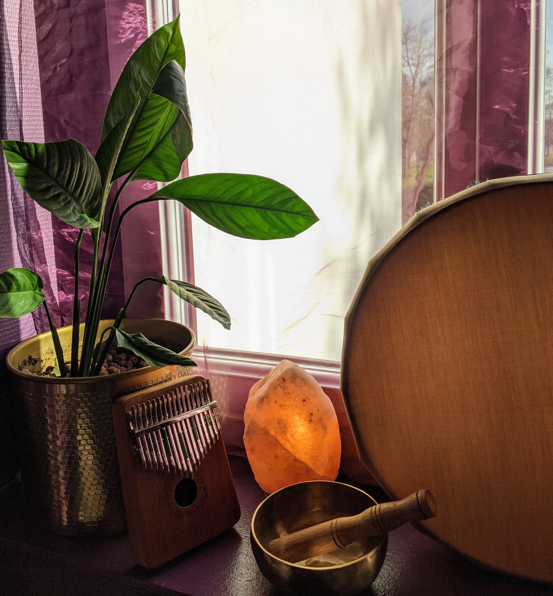
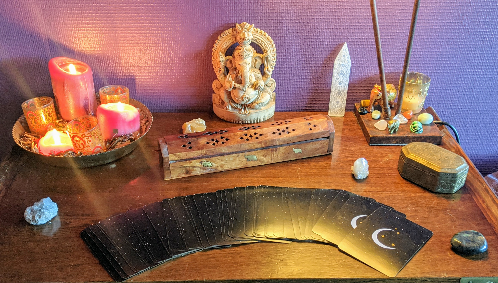

Elles permettent un accompagnement différent mais complémentaire de l'ayurvéda, pour avancer de façon plus alignée.
C'est un travail plus dans l'invisible, en lien avec votre âme, qui permet de vous aider à vous épanouir pleinement dans votre incarnation.
Elles permettent de t'éclairer sur une problématique en particulier ou bien si tu es dans le flou, te guider sur les pistes que tu pourrai explorer,t'aider à pousser certaines portes.
Je met en lumière l'énergie dans laquelle tu te trouves en ce moment, ce que tu es invité à mettre en place, le point d'attention ou piège à éviter, les qualités que tu as et que tu peux utiliser, l'issue qui en découlera.
Tu recevras un bilan de cette guidance avec les différents messages, conseils que je pourrai te prodiguer - rituels, mantras, huiles essentielles, litothérapie... - pour te permettre d'avancer.
Une guidance - 60€
Ils permettent de travailler en profondeur sur le corps énergétiques. D'aller nettoyer le corps de tout ce qui ne lui appartient pas.
Les bienfaits des bains sonores sont nombreux:
Un soin chamanique 30 min - 60€
Ils peuvent être couplés avec des soins ayurvédques ou bains sonores pour potentialiser l'effet de ces pratiques.
